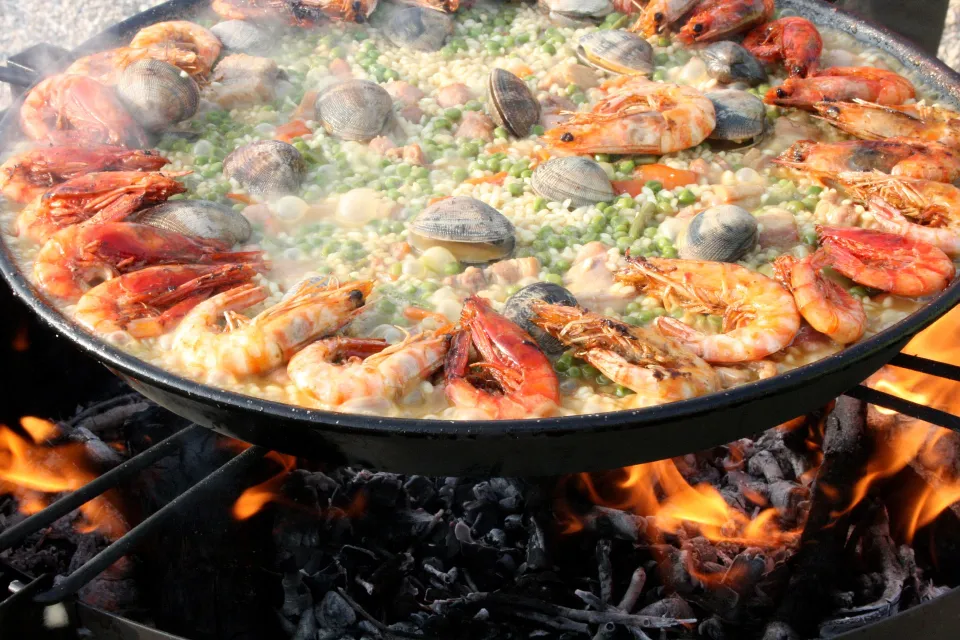

PRATOS TÍPICOS DA CULINÁRIA ESPANHOLA
Paella
Originário do município de Valencia, também conhecido como Paella Valenciana. O prato típico espanhol surgiu como alimento de camponeses, nos séculos XV e XVI, quando era preparado com arroz, óleo de oliva e sal, em uma panela redonda, ampla, rasa e com alças, chamada de “Paella”. Com o passar dos anos e a internacionalização da refeição, ao preparado simples foi sendo acrescido outros ingredientes como alguns tipos de mariscos, modificando a receita original. Com isso, um grupo de cozinheiros valencianos decidiu oficializar uma única receita, a fim de não gerar conflito entre a tradicional paella valenciana e as demais variações da iguaria pelo mundo.

Bacalhau ao pil-pil
Bacalhau ao molho Pil-pil ou Bacalao al Pil-pil, como se diz no País Basco, é uma receita tradicionalíssima dessa região espanhola. É um prato bem rústico, porém com o gosto delicado e "potencializado" de bacalhau e azeite. Explico porque: o molho pil-pil, amarelinho, é feito com uma emulsão do azeite onde o bacalhau é cozido e da gelatina que se solta da pele do peixe. E é isso, nada mais que isso. É mais simples do que parece e o resultado é sensacional.

Tortilhas
A Tortilla espanhola é também conhecida como Tortilla de patata. Além de ser deliciosa e nutritiva, faz parte da história e da alma de seu país. Como a Paella, é um dos pratos mais representativos da rica cozinha caseira espanhola. Rotulada como comida vulgar e rústica de tão simples, chega a alcançar o mais elevado grau da perfeição.